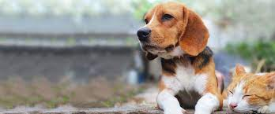
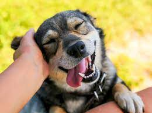
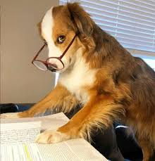
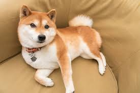

List of individual dogs
Advertising

- Axelrod, Basset Hound, appeared in commercials and print ads for Flying "A" Service Station advertisements in the 1960s.[1]
- Banjo, portrayed Alex, an Irish Setter/Golden Retriever mix and star of Stroh's beer advertising in the 1980s. Also mentioned in the Tone Lōc song, "Funky Cold Medina".
- Cheeka, a Pug who appeared in the popular "You & I" advertising campaign of Hutch's cellular service in India, along with the child actor Jayaram.
- Gidget, a female Chihuahua, was featured in a Taco Bell advertising campaign as the "Taco Bell Chihuahua". She also played the role of Bruiser's mother in Legally Blonde 2.[2]
- Honey Tree Evil Eye, a female Bull Terrier, was known as Spuds MacKenzie in her role as the Budweiser spokes-dog.[3]
- Nipper, the dog with the gramophone in the HMV logo
- Paddington, a Golden Retriever "professional stand-in, and stunt double" portrays the real Duke Bush (Duffy "Duke" of Castlebury) at promotional events and in
- commercials for Bush's Best Baked Beans.[4] Duke stars in the commercials, where the dog's owner, Jay Bush (president of the company) pleads for the dog to maintain the secret family recipe. The punchline occurs when the dog states: "Roll that beautiful bean footage."[5]
- Tinkerbelle, a Papillon/Maltese mix and canine model featured in advertisements for various companies.[6]
Film

- Ace the Wonder Dog, appeared in numerous films and serials in the 1930s and 1940s
- Beasley, a Dogue de Bordeaux, starred in the film Turner & Hooch[7]
- Ben (II), a Golden Retriever, appeared in many films. His characters included Shadow in Homeward Bound: The Incredible Journey, William in Maybe Baby, Rusty in Purely Belter and Messenger in Made in Hong Kong.[8]
- Bingo, an Otterhound, starring as Sandy in Annie in 1982
- Blair, a Collie, the first dog screen star, starring in Rescued by Rover in 1905
- Buddy, a Golden Retriever, starred in the 1997 film Air Bud but died from cancer a year later. He also played a cameo as Comet on the TV series Full House.
- Butkus Stallone, Sylvester Stallone's personal pet Bullmastiff since a puppy; featured in Rocky as the boxer's "training partner".[9] Stallone credits Butkus for inspiring the screenplay.[10]
- Cosmo, a Jack Russell Terrier from Beginners.
- D. J., a Siberian Husky, played the roles of Demon in Snow Dogs and Max in Eight Below
- Higgins, played the leading role of Benji in the movie of the same name and had a role on the TV series Petticoat Junction.
- Jean, the Vitagraph Dog, screen's first leading canine to have her name in the film title; starred in movies from 1908 to 1913
- Jed (1977-1995), appeared in The Thing, The Journey of Natty Gann and White Fang.
- Keystone Teddy, a dog actor in the early 20th century.
- Koko, a red Australian Kelpie, played Red Dog in the 2011 film adaptation based on the eponymous novel.
- Kuma, has been seen in several movies, including the short film Saving Angelo
Television

- "Beauregard the Wonder Dog", appeared regularly though unspectacularly on Hee Haw.
- Beejay, a German Shepherd, was the first Rex on Inspector Rex. His formal name is Reginald Von Ravenhorst, which also serves as Rex's full name in the show.
- Bernadette portrayed the Basset Hound "Cleo" in the 1950s TV series The People's Choice[18]
- Blaze, Jr., called JR, a German Shepherd who played Rin Tin Tin in the 1950s TV show The Adventures of Rin Tin Tin.
- Bouncer, played a dog also called Bouncer in the Australian soap opera Neighbours.
- Buck, a Briard, played the role of Buck Bundy on the TV show Married... with Children.
- Bullet, "the Wonder Dog", a black and silver AKC registered German Shepherd (originally: "Bullet Von Berge") was a regular on the '50s TV show The Roy Rogers Show; his taxidermic remains (along with Trigger) were displayed at The Roy Rogers & Dale Evans Museum and he was sold in 2010 at Christie's for $35,000[19]
- Comet, a Golden Retriever, who played Comet on the TV show Full House. He also played Fluke in the film Fluke.[20]
- Graubaer's Boker, plays Bear on Person of Interest
- Happy, furry white dog playing Happy on the TV show 7th Heaven
- Inky, a police dog who appeared in the British police drama Softly, Softly: Taskforce during 1969–70
- Joe, German Shepherd, starring in the television series Run, Joe, Run
- Kyte, a Belgian Tervuren famous for playing Wellard in EastEnders
Athletes

- Ashley Whippet, the first disc dog, was a canine athlete of the 1970s and three-time winner of the Canine Frisbee Disc World Championships.[23]
- Cindy, a Greyhound who earned Guinness World Record's Highest Jump by a Dog. Cindy cleared a 5.5-foot (1.7 m) hurdle.
- Haruitike, a vegan yoga dog in India[24]
- King Buck, a Labrador Retriever, successfully completed an unprecedented 63 consecutive series in the National Championship Stake and was the National Retriever Field Trial Club champion for two successive years (in 1952 and 1953), which accomplishment was not duplicated for nearly 40 years. He was also the first dog to appear on a United States Fish and Wildlife Service duck stamp, which always featured a water fowl.[25]
- Master McGrath, an Irish Greyhound whose racing victories and fame gained him an audience with the British Royal Family.
- Mick the Miller, a racing Greyhound, was the first greyhound to win the English Derby in successive years and the first greyhound to run a 525-yard (480 m) course in under 30 seconds.[26]
- Morghem's .500 Nitro Express, an American Pit Bull Terrier, earned several United Kennel Club titles in his first campaign from the following sports: dock jumping, weight pulling, rally obedience and Show Champion. During the campaign he also passed Canine Good Citizen and USTTA temperament testing, while acquiring 70 points in the American Pulling Alliance with three first place and three second place wins.[27]
- Baekgu, the Korean Jindo Dog, after being sold by the original owner due to economic hardship to a new owner 300 km away, came back to the original owner after 7 months.
Homing dogs

- Bobbie, the Wonder Dog, after accidental abandonment on a cross-country trip, Bobbie made his way back over 2,551 miles (4,105 km) to his family's home.
- Baekgu, the Korean Jindo Dog, after being sold by the original owner due to economic hardship to a new owner 300 km away, came back to the original owner after 7 months.